Why laptops need a different approach
The laptop is the standard computing platform for anyone who is mobile, because so much technology fits into such a small space. The trade-off is repair: everything is built to precise specifications, so troubleshooting needs to be just as precise.
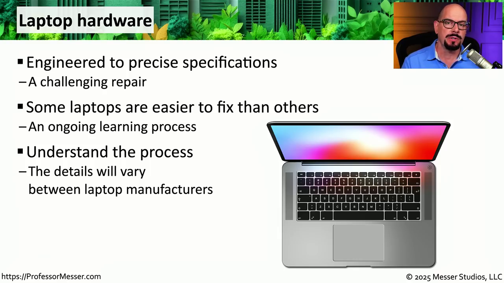
ලැප්ටොප් පරිගණක (Laptops) යනු ජංගමව (Mobile) ගමන් බිමන් වල යෙදෙන ඕනෑම අයෙකු සඳහා ප්රමිතියක් බවට පත්ව ඇති පරිගණක වේදිකාවකි. ඉතා කුඩා ඉඩක විශාල තාක්ෂණයක් අන්තර්ගත කර ඇති නිසා මෙය ලොව පුරා අතිශයින් ජනප්රිය වී ඇත. කෙසේ වෙතත්, ලැප්ටොප් පරිගණක ඉතා නිශ්චිත ඉංජිනේරු සැලසුම් (Precise Specifications) අනුව නිපදවා ඇති බැවින්, ඒවායේ දෝෂ හඳුනාගැනීම සහ අලුත්වැඩියාව (Troubleshooting and Repair) සඳහාද ඉතා නිවැරදි හා ක්රමානුකූල ප්රවේශයක් අවශ්ය වේ.
• නඩත්තු කිරීමේ පහසුව (Serviceability): ඇතැම් ලැප්ටොප් පරිගණක මතකය (Memory) හෝ ගබඩා උපාංග (Storage Devices) පහසුවෙන් ගලවා මාරු කළ හැකි පරිදි (Modular) නිපදවා ඇති අතර, තවත් සමහර ලැප්ටොප් පරිගණක අභ්යන්තර කොටස් වලට ප්රවේශ වීම සහ උපාංග මාරු කිරීම ඉතා අපහසු වන පරිදි සකස් කර ඇත.
• නිෂ්පාදන ආයතන (Manufacturers) අනුව ලැප්ටොප් නඩත්තු කිරීමේ සහ අලුත්වැඩියා කිරීමේ ක්රමවේද එකිනෙකට වෙනස් වේ.
Laptop batteries
The battery is the power source when the laptop is unplugged — and how easily it can be replaced depends entirely on the design.
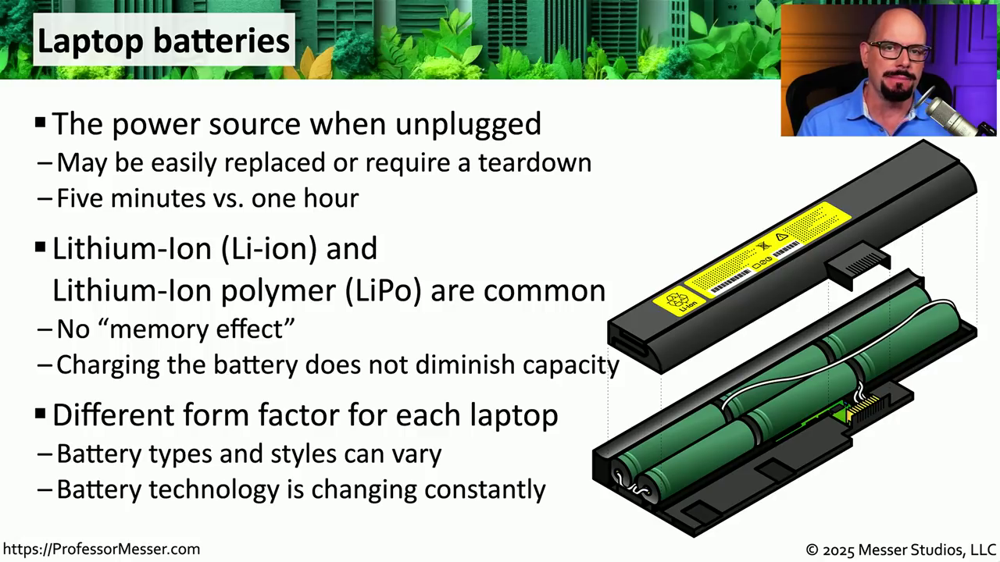
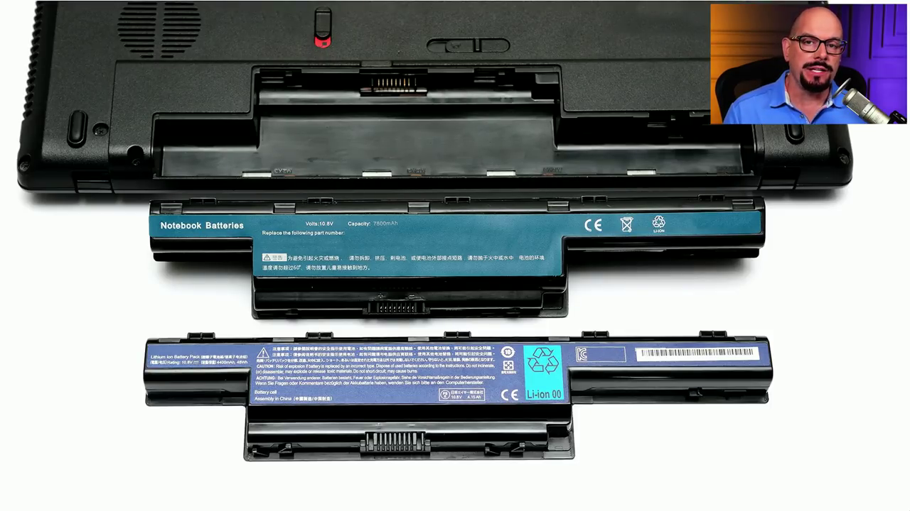
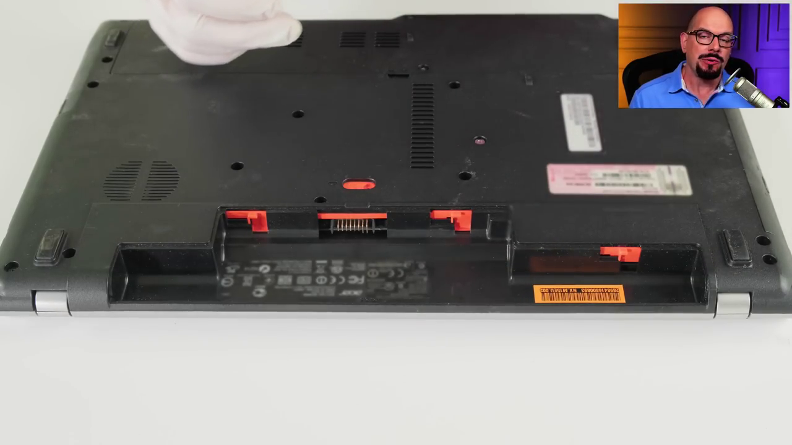
ලැප්ටොප් පරිගණක වල බැටරි ක්රියාකාරිත්වය සහ සැකැස්ම ප්රධාන ආකාර දෙකකින් දැකගත හැක:
• මොඩියුලර් බැටරි (Modular Batteries): පරිශීලකයාට බොත්තමක් (Button/Latch) එබීමෙන් පහසුවෙන් ගලවා වෙනත් බැටරියක් සවි කළ හැකි ආකාරයේ බැටරි.
• අභ්යන්තර/තනා ඇති බැටරි (Built-in/Non-modular Batteries): ලැප්ටොප් එක තුළටම සවිකර ඇති අතර, පරිශීලකයාට පහසුවෙන් මාරු කළ නොහැක. මේවා මාරු කිරීමට කාර්මික ශිල්පියෙකු (Technician) ලවා ලැප්ටොප් පරිගණකය සම්පූර්ණයෙන්ම විසුරුවා හැරිය (Disassemble) යුතුය.
බැටරි තාක්ෂණයන් (Battery Technologies):
• ලිතියම් අයන් (Lithium-ion - Li-ion) සහ ලිතියම් අයන් පොලිමර් (Lithium-ion Polymer - LiPo) නූතන ලැප්ටොප් වල බහුලව භාවිත වේ.
• පැරණි බැටරි වල තිබූ මතක ආචරණය (Memory Effect) මෙම බැටරි වල නොමැත. එබැවින් ඕනෑම අවස්ථාවක බැටරි ධාරිතාවට (Capacity) හානියක් නොවී නැවත ආරෝපණය (Recharge) කළ හැක.
• එක් එක් ලැප්ටොප් මාදිලියට ආවේණික හැඩතල සහ ප්රමාණ (Form Factors) ඇති බැවින්, නියමිත ලැප්ටොප් මාදිලියට (Specific Laptop Model) ගැලපෙන බැටරියම තෝරාගත යුතුය.
Keyboards & keycaps
The keyboard is the most-used component on a laptop, so it is usually the part replaced most often.
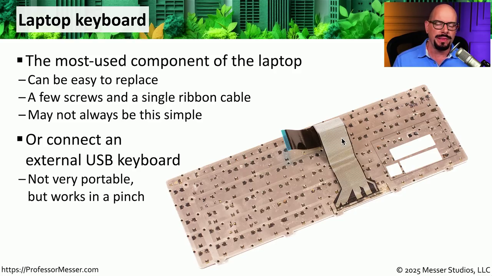
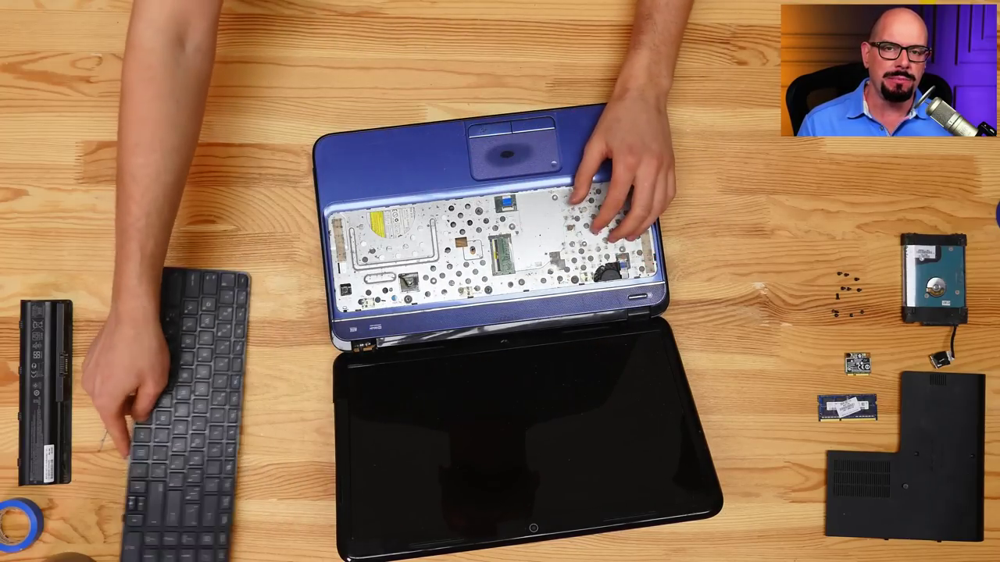
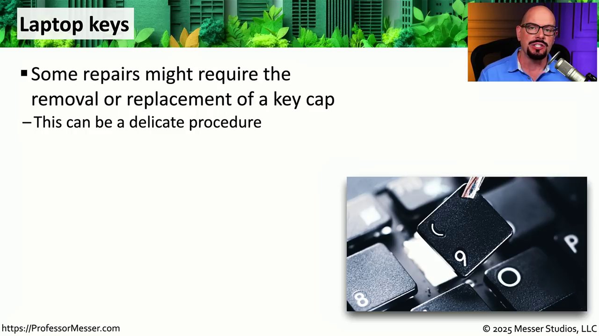
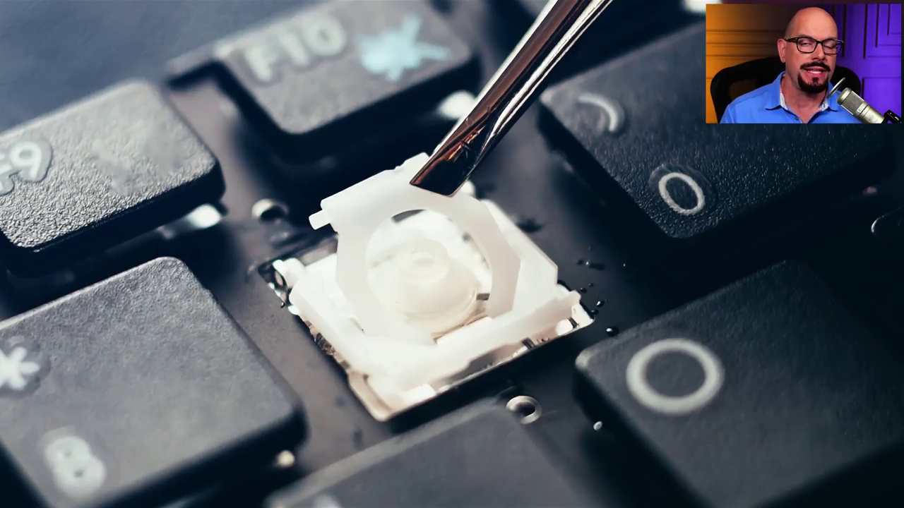
ලැප්ටොප් පරිගණකයක වැඩියෙන්ම භාවිතාවන කොටසක් වන්නේ යතුරුපුවරුවයි (Keyboard). එබැවින් වැඩිපුරම මාරු කිරීමට සිදුවන්නේද යතුරුපුවරුවයි.
• යතුරුපුවරුව මාරු කිරීම (Keyboard Replacement): බොහෝ ලැප්ටොප් වල යතුරුපුවරුව තනි ඒකකයක් (Single Unit) ලෙස ඉස්කුරුප්පු කිහිපයක් හෝ ආවරණයක් (Bezel) ඉවත් කර පහසුවෙන් ගලවාගත හැක. මෙය මවු පුවරුවට (System Board / Motherboard) සම්බන්ධ වන්නේ රිබන් කේබලයක් (Ribbon Cable) මගිනි.
• දෝෂ විනිශ්චය (Diagnostics & Troubleshooting): ලැප්ටොප් යතුරුපුවරුවේ දෝෂයක් ඇතිවූ විට, බාහිර USB යතුරුපුවරුවක් (External USB Keyboard) සම්බන්ධ කර පරීක්ෂා කිරීමෙන් දෝෂය ඇත්තේ යතුරුපුවරු දෘඩාංගයේ (Hardware) ද නැතහොත් මෙහෙයුම් පද්ධතියේ (Operating System) ද යන්න තහවුරු කරගත හැක.
• සංයුක්ත සැකැස්ම (Compact Design): කුඩා ඉඩක සාමාන්ය යතුරුපුවරුවක ඇති සියලුම යතුරු අඩංගු කර ඇත. විශේෂ කාර්යයන් සඳහා Function (Fn) යතුරු සහ Windows යතුරු භාවිත වේ. විශාල ප්රමාණයේ ලැප්ටොප් පරිගණක වල වෙනම අංක පුවරුවක්ද (Numeric Keypad) අන්තර්ගත වේ.
• තනි යතුරු මාරු කිරීම (Keycap Replacement): ඩෙස්ක්ටොප් යතුරු මෙන් නොව ලැප්ටොප් යතුරු වල ඇති යාන්ත්රණ (Scissor switches) ඉතා සියුම් (Fragile) බැවින්, තනි යතුරක් මාරු කිරීමේදී නිෂ්පාදකයාගේ උපදෙස් නිවැරදිව පිළිපැදිය යුතුය.
Laptop memory (SO-DIMM)
Laptops use a smaller form factor for memory than desktops: the SO-DIMM — Small Outline Dual In-line Memory Module.
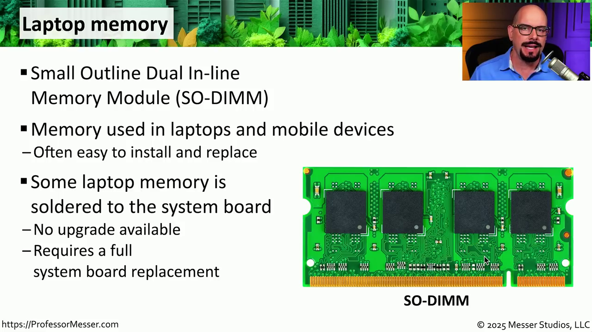
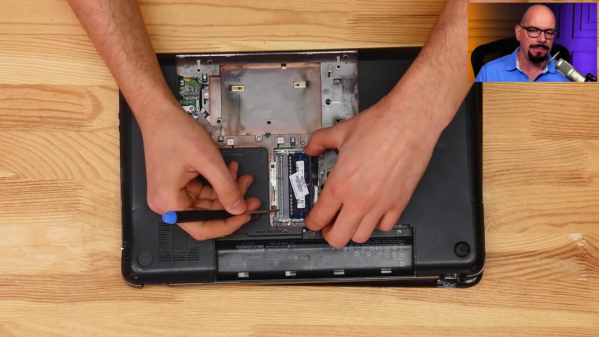
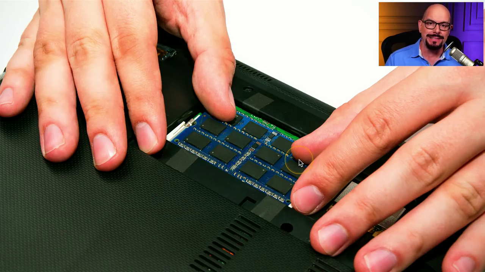
ඩෙස්ක්ටොප් පරිගණක වලට වඩා ලැප්ටොප් පරිගණක කුඩා බැවින්, ඒවායේ මතක මොඩියුලද කුඩා ප්රමාණයෙන් නිපදවයි.
• SO-DIMM (Small Outline Dual In-line Memory Module): ලැප්ටොප් පරිගණක සඳහා භාවිත වන සංයුක්ත රැම් (RAM) මොඩියුල වර්ගයයි.
• මොඩියුලර් සහ පෑස්සූ මතකය (Modular vs Soldered Memory): ඇතැම් ලැප්ටොප් වල SO-DIMM මගින් පහසුවෙන් මතකය වැඩිදියුණු (Upgrade) කළ හැකි වුවද, සමහර නවීන ලැප්ටොප් වල මතක චිප්ස් මවු පුවරුවටම පාස්සා (Soldered) ඇත. එවැනි ලැප්ටොප් වල මතකය වැඩි කිරීමට සම්පූර්ණ මවු පුවරුවම මාරු කිරීමට සිදුවේ.
• සවිකිරීමේ ක්රමය (Installation): ලැප්ටොප් පිටුපස ඇති ආවරණය විවෘත කර, රැම් මොඩියුලය නියමිත කෝණයෙන් ඇතුල් කර පහළට තද කළ විට මවු පුවරුවේ ක්ලිප් (Clips) මගින් එය සවිවේ.
Laptop storage
Older laptops use a spinning hard drive; modern ones have moved to much faster and more reliable solid state storage.
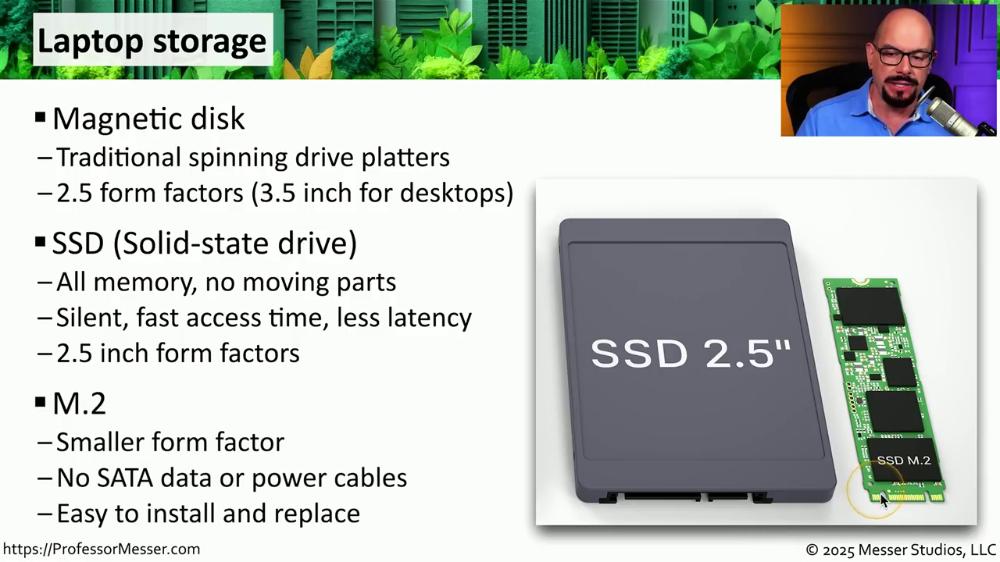
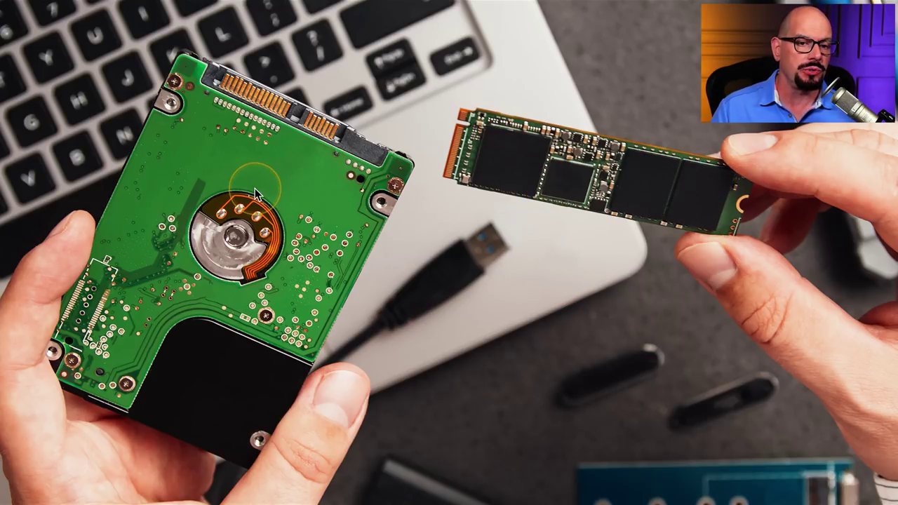
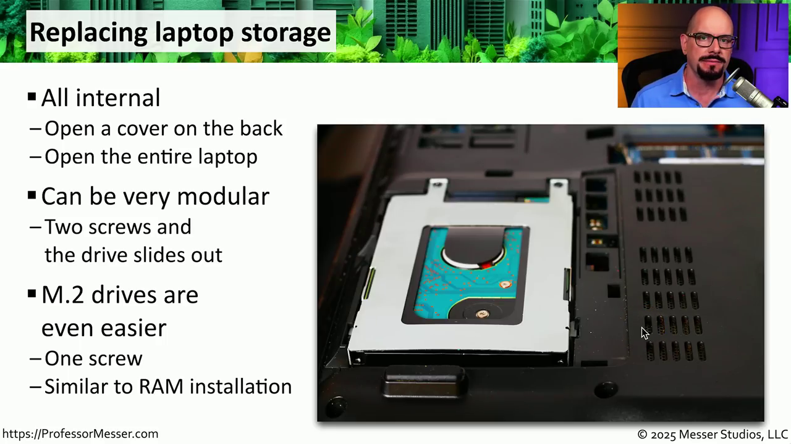
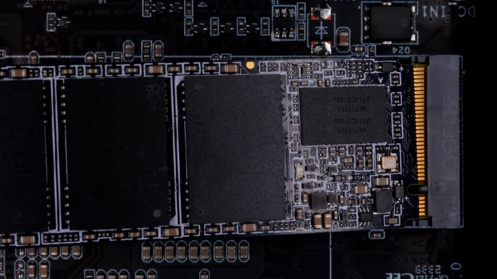
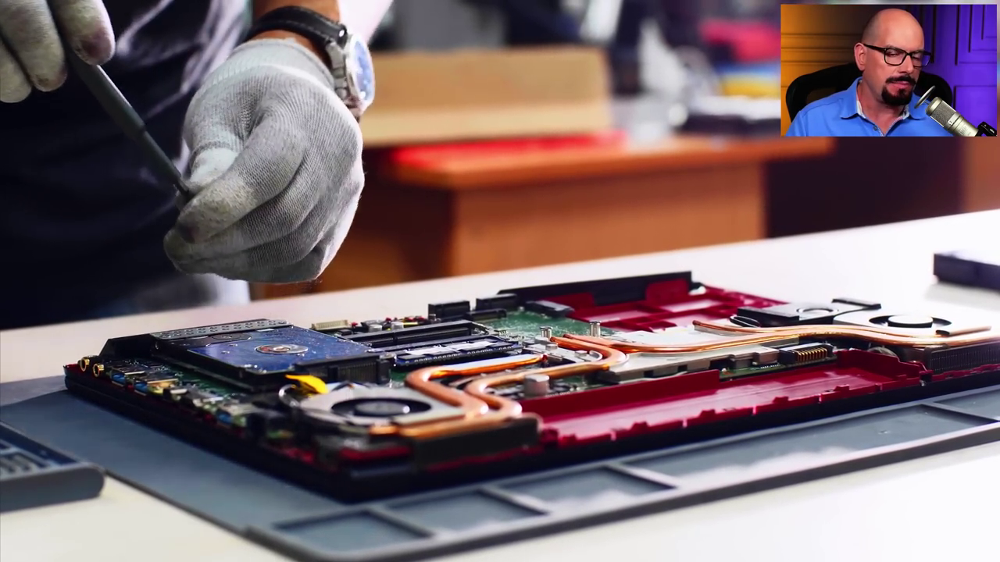
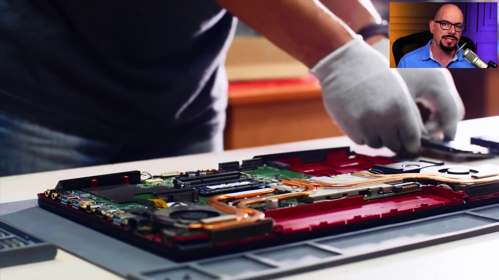
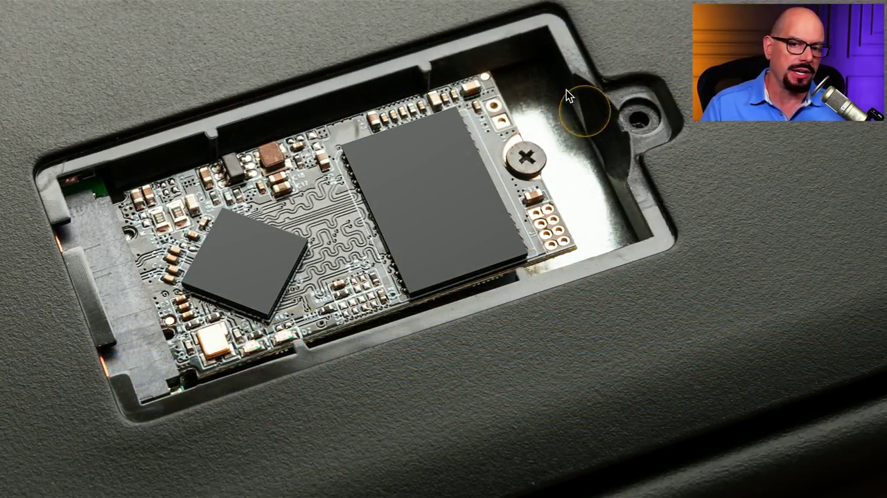
පරිගණක මෙහෙයුම් පද්ධති ගොනු සහ පරිශීලක දත්ත ගබඩා කිරීමට විවිධ මාදිලියේ ගබඩා උපාංග භාවිත වේ:
• චුම්භක දෘඪ ධාවක (Magnetic Hard Drives / Spinning Drives):
• ඩෙස්ක්ටොප් වල භාවිත වන අඟල් 3.5 ධාවක වෙනුවට ලැප්ටොප් වල අඟල් 2.5 (2.5-inch) ධාවක භාවිත විය.
• ඝන-තත්ව ධාවක (Solid State Drives - SSD):
• චලනය වන කොටස් නොමැති (No moving parts), වේගවත් සහ කම්පන වලට ඔරොත්තු දෙන (Reliable) මතක චිප්ස් සහිත ධාවක වේ.
• M.2 අතුරුමුහුණත (M.2 Interface SSD):
• අඟල් 2.5 ධාවක වලටත් වඩා ඉතා කුඩා වන අතර, මවු පුවරුවට සෘජුවම සම්බන්ධ වන කාඩ්පතක් බඳුය. තනි ඉස්කුරුප්පුවකින් (Single Screw) සවිකළ හැක. වෙනම දත්ත හෝ විදුලි කේබල් අවශ්ය නොවේ.
Migrating from HDD to SSD
Swapping a spinning drive for an SSD is a big upgrade — almost like getting a new laptop from replacing one component.
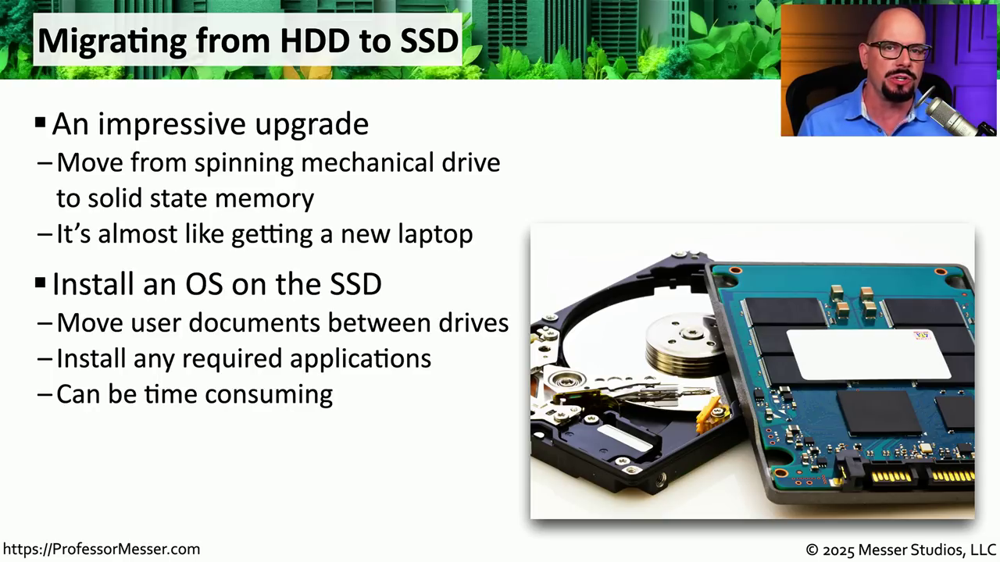
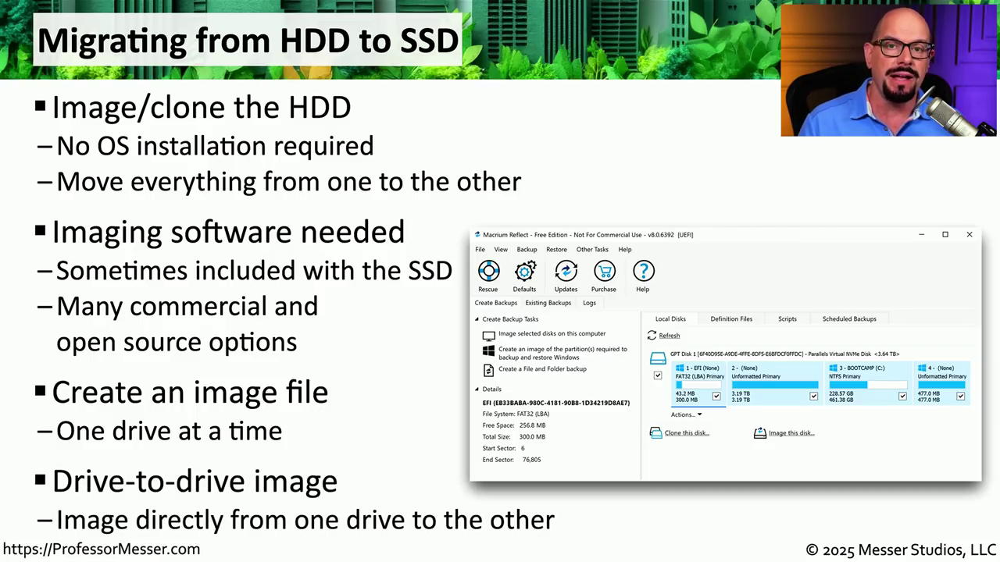
ධාවක ක්ලෝනකරණය සහ මාරු කිරීම (Drive Cloning & Replacement):
• පැරණි යාන්ත්රික හාඩ් ඩ්රයිව් වෙනුවට SSD එකක් සවි කිරීම ලැප්ටොප් පරිගණකයක ක්රියාකාරිත්වය සහ වේගය විශාල ලෙස ඉහළ නංවයි.
• පැරණි ධාවකයේ ඇති සියලුම දත්ත, මෙහෙයුම් පද්ධතිය සහ මෘදුකාංග ඒ ආකාරයෙන්ම නව SSD එකට පිටපත් කර ගැනීමට ක්ලෝනකරණ මෘදුකාංග (Imaging / Cloning Software) භාවිත කරයි.
Wireless cards & antennas
Many laptops have no wired network port; wireless connectivity is usually on the motherboard, though older laptops use separate modular cards.
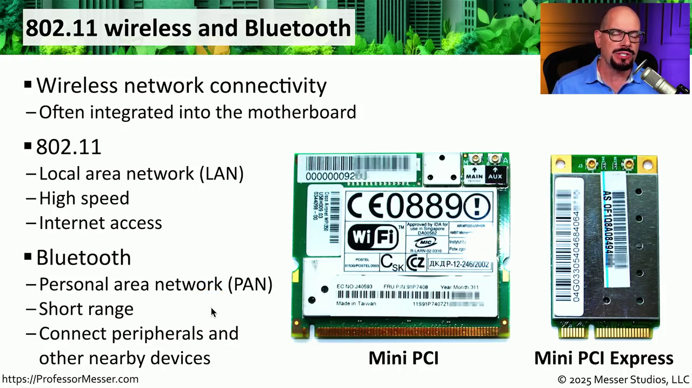
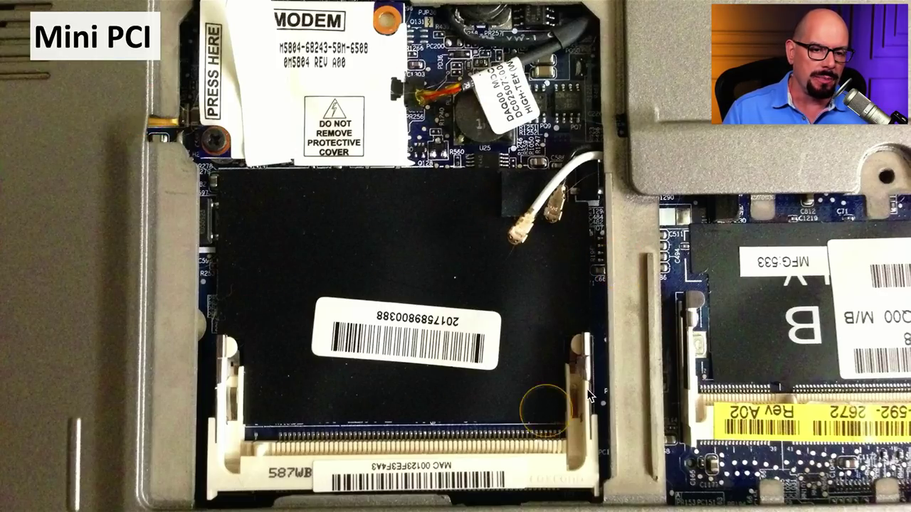
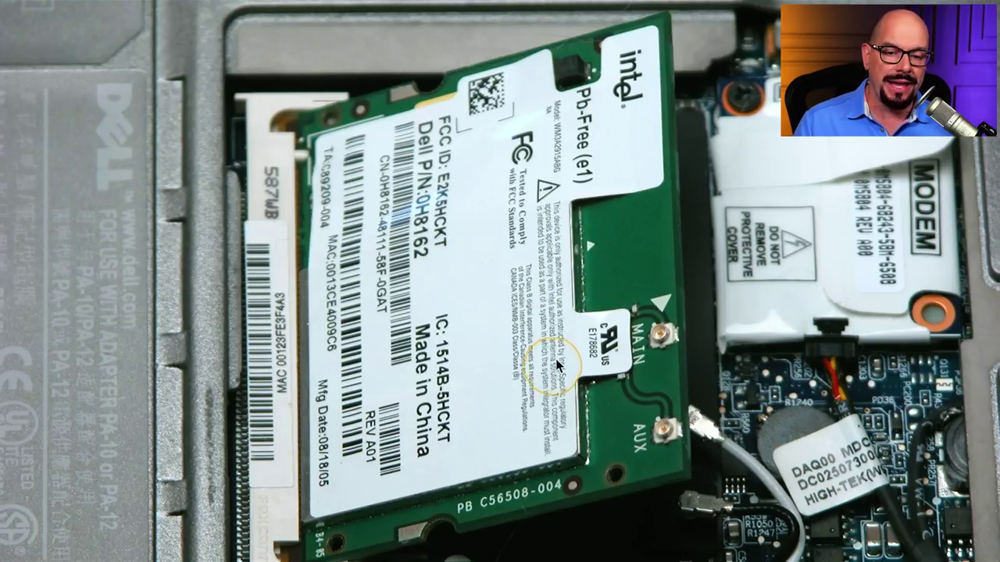
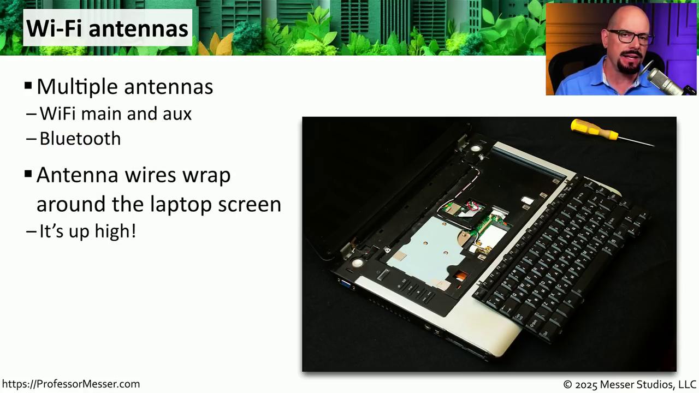
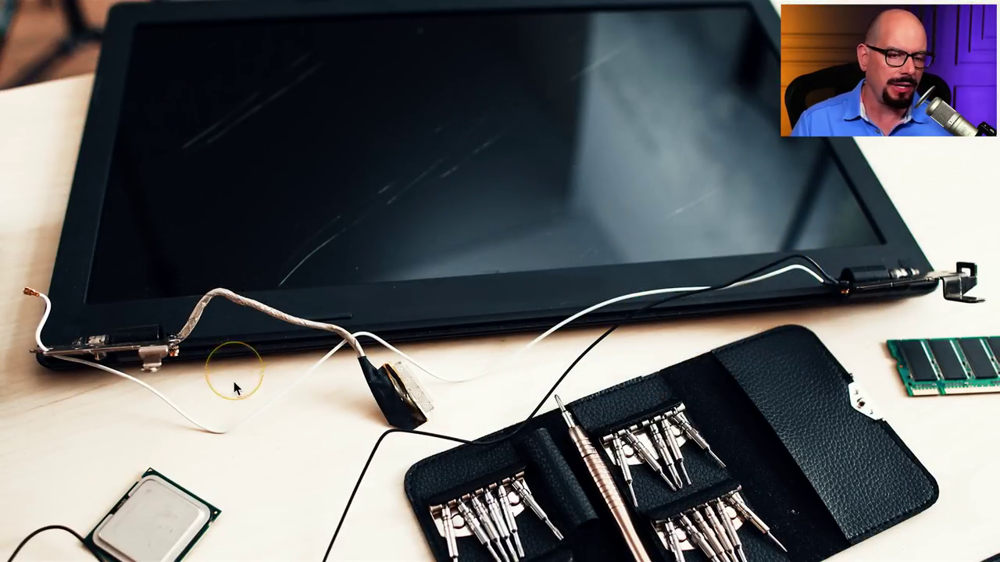
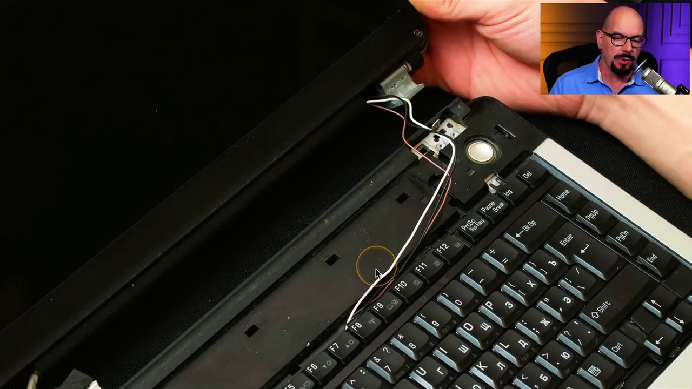
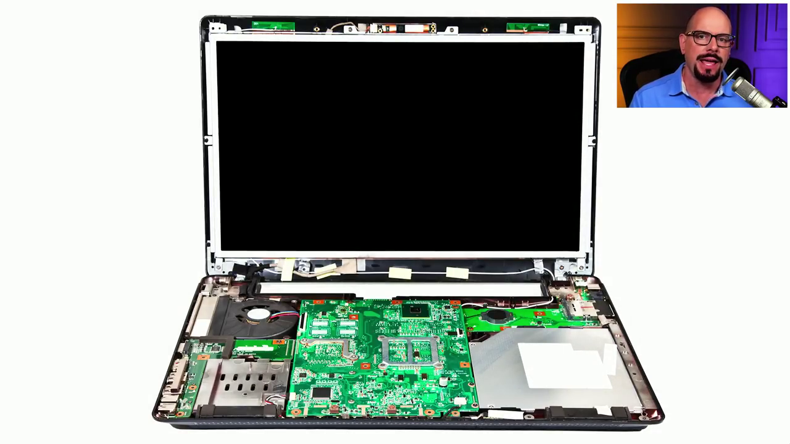
බොහෝ නවීන ලැප්ටොප් පරිගණක වල වයර් මගින් සම්බන්ධ වන ඊතර්නෙට් (Wired Ethernet) පෝට් නොමැති අතර, සම්පූර්ණයෙන්ම රැහැන් රහිත තාක්ෂණයන් මත රඳා පවතී.
• Wi-Fi (802.11) සහ Bluetooth: ලෝකයට සහ බාහිර උපාංග වලට සම්බන්ධ වීමට භාවිත වේ. බ්ලූටූත් මගින් පුද්ගලික ප්රදේශ ජාල (PAN - Personal Area Network) හරහා මවුස්, යතුරුපුවරු සහ හෙඩ්ෆෝන් සම්බන්ධ කරයි.
• මිනි PCI / මිනි PCIe / M.2 රැහැන් රහිත කාඩ්පත් (Mini PCI / Mini PCIe Wireless Cards): මවු පුවරුවේ සවිකරන කුඩා මොඩියුලර් කාඩ්පත් වේ.
• ඇන්ටෙනා වයර් (Antenna Wires): Wi-Fi කාඩ්පතට Main සහ Aux ලෙස වයර් සම්බන්ධ වන අතර, බ්ලූටූත් සඳහාද වයර් සම්බන්ධ වේ. හොඳම සංඥා ලබාගැනීම සඳහා මෙම ඇන්ටෙනා වයර් ලැප්ටොප් තිරයේ (Display) ඉහළ දාරය වටා ඇතුළතින් රැහැන්ගත කර ඇත.
Biometric authentication
Modern operating systems support signing in with something other than a password.
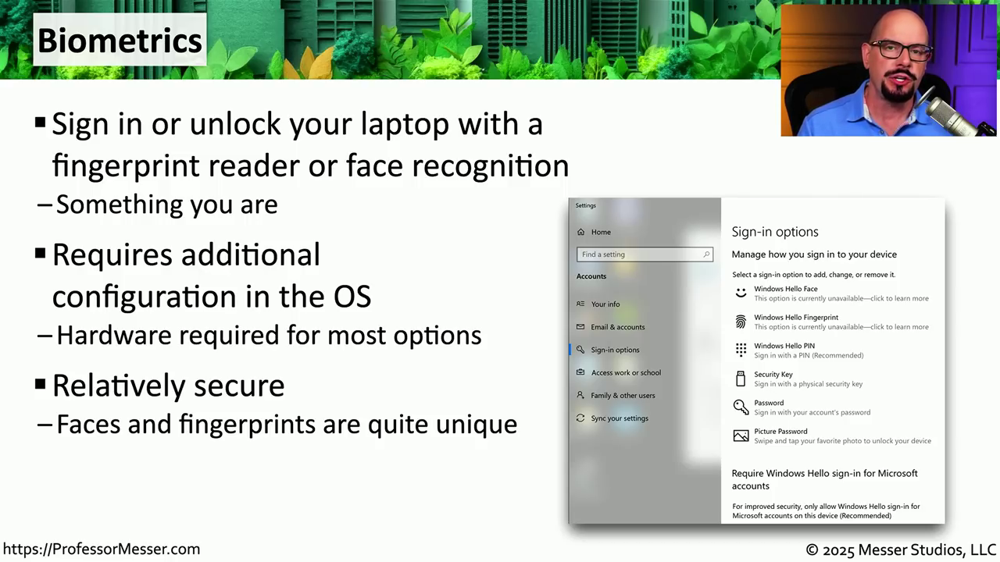
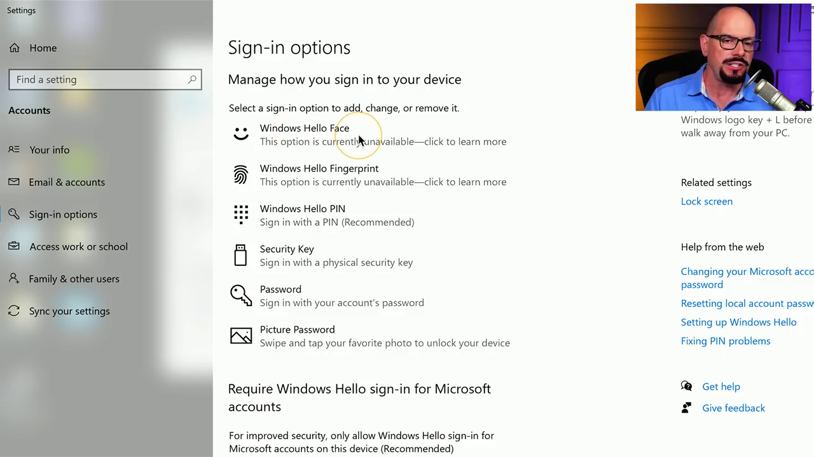
මුරපද (Passwords) වෙනුවට ශරීර ලක්ෂණ භාවිතයෙන් ලැප්ටොප් පරිගණකයට ආරක්ෂිතව ප්රවේශ වීමේ පහසුකමයි:
• ඇඟිලි සලකුණු කියවනය (Fingerprint Reader) සහ මුහුණු හඳුනාගැනීම (Face Recognition):
• උදාහරණයක් ලෙස Windows මෙහෙයුම් පද්ධතියේ Windows Hello Face සහ Windows Hello Fingerprint තාක්ෂණයන් භාවිත කළ හැක.
• මේ සඳහා මෙහෙයුම් පද්ධති සහය මෙන්ම නියමිත දෘඩාංග (Biometric Hardware) අන්තර්ගත විය යුතුය.
NFC, camera & microphone
A short-range wireless link, plus the built-in camera and microphones used for video calls.
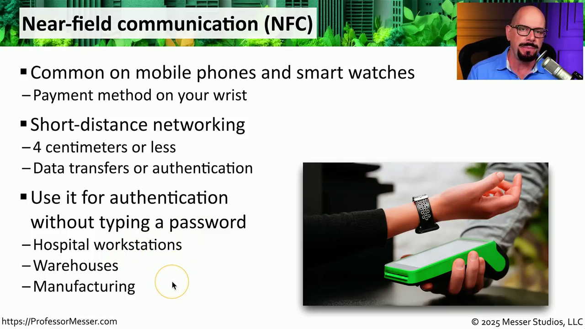
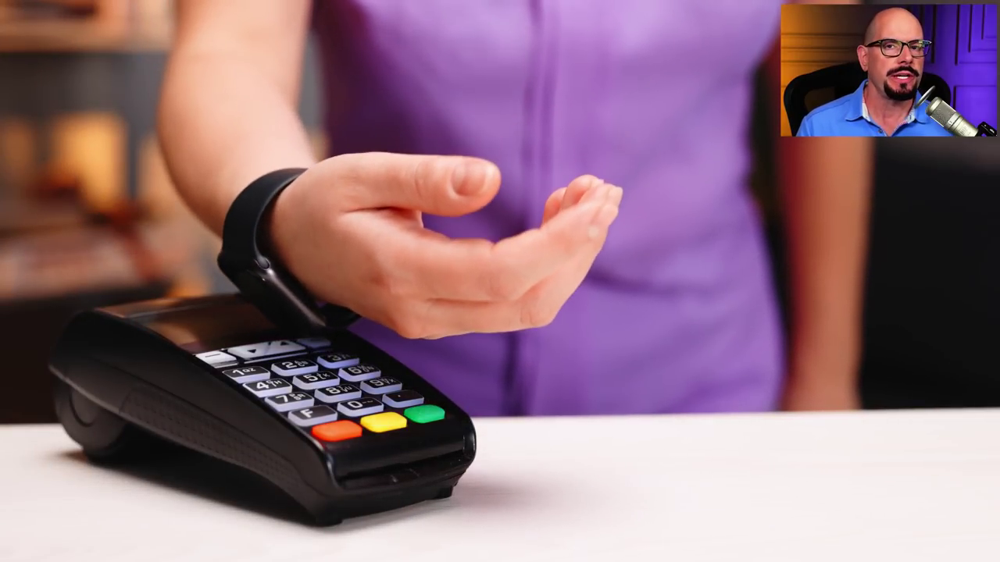
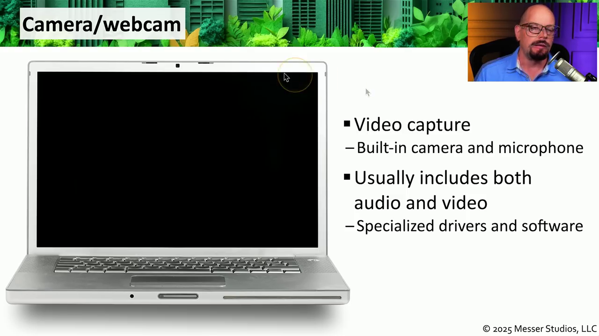
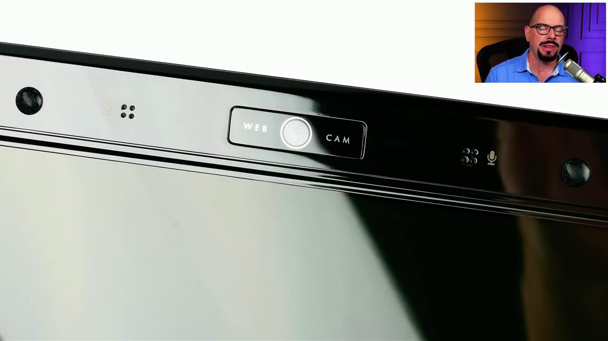
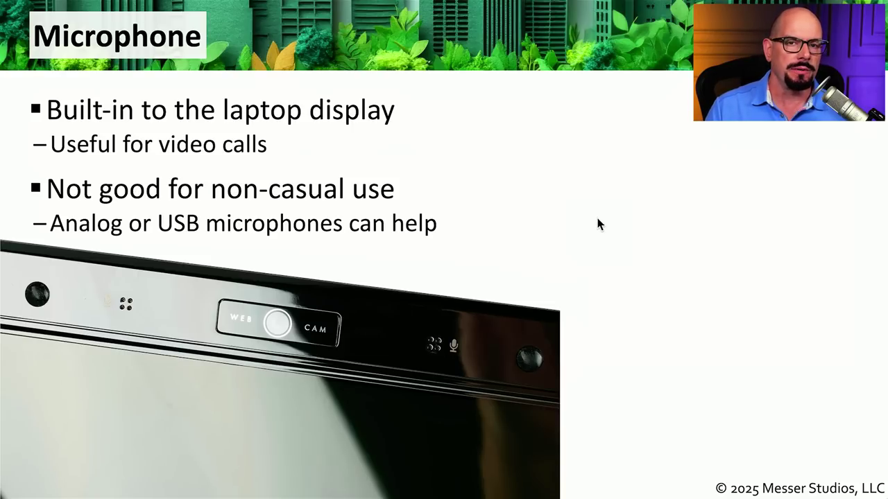
• NFC (Near Field Communication): සෙන්ටිමීටර 4 ක් හෝ ඊට අඩු ඉතා කෙටි දුරක් තුළ සිදුවන රැහැන් රහිත සන්නිවේදන ක්රමයකි.
• ස්මාර්ට් ජංගම දුරකථන/ඔරලෝසු මගින් ගෙවීම් කිරීම (Point of Sale - POS Payments).
• රෝහල්, කර්මාන්තශාලා, සහ ගබඩා (Warehouses) වල සේවක හැඳුනුම්පත් (Access Cards) මගින් පරිගණක වලට සත්යාපනය වී ඇතුළු වීම සඳහා භාවිත වේ.
• ලැප්ටොප් කැමරා සහ මයික්රෆෝන (Built-in Webcams & Microphones):
• වීඩියෝ සාකච්ඡා (Video Conferencing) සඳහා තිරයේ ඉහළ මැද කැමරාව සහ ඒ දෙපස මයික්රෆෝන (Microphone Array) පිහිටා ඇත.
• වඩා හොඳ ගුණාත්මක බවක් අවශ්ය නම් බාහිර USB කැමරාවක් (External Camera) සවිකරගත හැක.
What to Remember for the Exam
The facts CompTIA loves to test on this objective.
- Modular batteries release with a button; built-in batteries need a technician to take the laptop apart.
- Laptop batteries: Li-ion and LiPo — no memory effect; the battery must match the exact laptop model.
- The keyboard is the most-replaced part; it connects via a ribbon cable. Test with an external USB keyboard.
- Laptop memory is SO-DIMM; some is soldered (whole system board must be replaced to upgrade).
- Laptop drives: 2.5" HDD/SSD (3.5" is desktop) and M.2 SSD — M.2 needs no SATA data or power cable.
- Upgrading HDD → SSD: use imaging/cloning software (image file or drive-to-drive) instead of reinstalling.
- 802.11 = LAN; Bluetooth = PAN; Wi-Fi cards use main and aux antennas.
- NFC range is roughly 4 cm or less; biometrics need OS support plus hardware (Windows Hello).
Glossary — Acronyms & Meanings
| Acronym | Full term | Meaning |
|---|---|---|
| SO-DIMM | Small Outline Dual In-line Memory Module | Compact RAM module used in laptops and mobile devices. |
| SSD | Solid State Drive | Storage made entirely of memory, with no moving parts. |
| M.2 | M.2 interface | Small SSD form factor that plugs into the system board, held by one screw. |
| LiPo | Lithium-Ion Polymer | Common laptop battery type with no memory effect. |
| LAN | Local Area Network | Network type served by 802.11 wireless. |
| PAN | Personal Area Network | Short-range network, typically Bluetooth. |
| NFC | Near Field Communication | Very short-range (~4 cm) wireless for payments and authentication. |
| POS | Point of Sale | Payment terminal, a common NFC use. |
| — | Mini PCI / Mini PCIe | Modular wireless cards found in older laptops. |
| — | Imaging / cloning software | Creates an exact copy of one drive for another. |
Comparison Tables
| Feature | Modular | Built-in |
|---|---|---|
| Replacement | Press a button and slide in a new one | Technician takes the laptop apart |
| Time | About five minutes | Up to an hour |
| User-serviceable | Yes | No |
| Type | Moving parts? | Form factor | Notes |
|---|---|---|---|
| Magnetic HDD | Yes — spinning platters | 2.5" | 3.5" in desktops |
| SSD | No | 2.5" | Silent, fast, less latency |
| M.2 SSD | No | Small card | One screw; no SATA data/power cables |
| Technology | Network type | Range | Typical use |
|---|---|---|---|
| 802.11 | LAN | Building-wide | High speed, internet access |
| Bluetooth | PAN | Short | Mouse, keyboard, peripherals |
| NFC | — | ~4 cm or less | Payments, authentication |